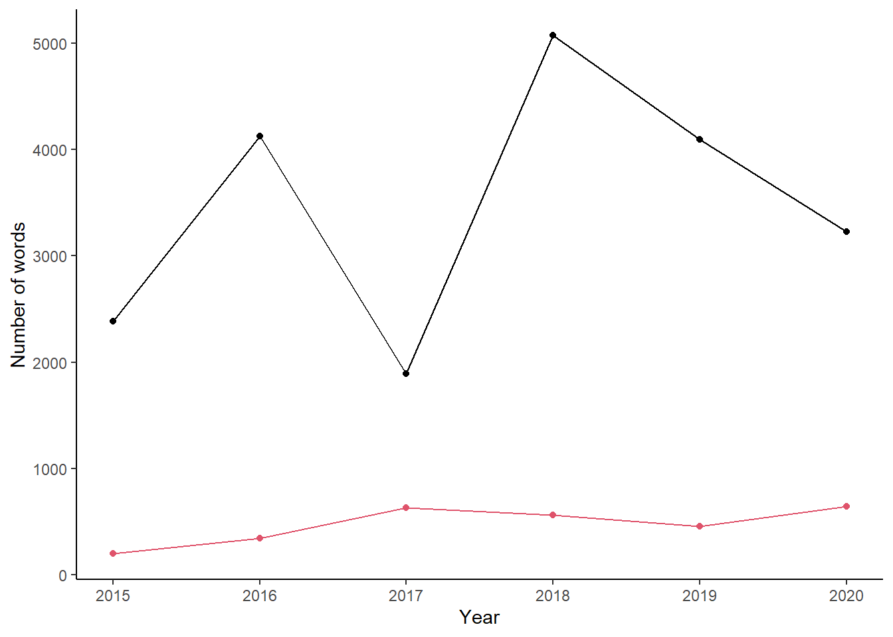

Since this website went live. In fact, with 2020 I didn’t notice and it’s even closer to 6 years now!
Well… let’s look at some stats. Sadly WordPress doesn’t let you download all the stats in a neat csv file. I copied and pasted some of the more interesting stats into Excel. Data until October 24th 2020.
2020 has taken a hit to my blogging productivity. Fair. I wrote really long posts in 2017 for only 3 of them. Over 20,000 words in total - I could have written three papers. There aren’t any strong annual trends… oh well.
| Year | Total posts | Total comments | Avg comments per post | Total likes | Avg likes per post | Total words | Avg words per post |
|---|---|---|---|---|---|---|---|
| 2015 | 12 | 3 | 0.3 | 0 | 0.0 | 2387 | 199 |
| 2016 | 12 | 3 | 0.3 | 6 | 0.5 | 4126 | 344 |
| 2017 | 3 | 1 | 0.3 | 3 | 1.0 | 1889 | 630 |
| 2018 | 9 | 2 | 0.2 | 3 | 0.3 | 5072 | 564 |
| 2019 | 9 | 0 | 0.0 | 1 | 0.1 | 4093 | 455 |
| 2020 | 5 | 0 | 0.0 | 1 | 0.2 | 3227 | 645 |
| Totals | 50 | 9 | 1.1 | 14 | 2.1 | 20794 | 2837 |

My CV has been downloaded 53 times this year alone! Hope people enjoyed it. It’s more popular than my preprints.
We can plot how popular my CV is over time.
Figure 1: Mean number of views per month across years
For no reason, we can see if there’s a seasonal pattern. There isn’t but there is an association between month and the number of views.
## Autumn Spring Summer Winter
## 15.83333 11.03333 12.80000 10.50000##
## Chi-squared test for given probabilities
##
## data: .
## X-squared = 1.383, df = 3, p-value = 0.7095Let’s look at the 10 most visited pages or posts:
| Post | Views |
|---|---|
| Home page / Archives | 1260 |
| About Me | 593 |
| Matchstick grasshoppers | 439 |
| Warramaba virgo | 372 |
| Using icons with rmarkdown | 328 |
| CV | 285 |
| Online resources for teaching zoology | 178 |
| Warramaba grasshoppers | 119 |
| Emus are cool birds | 86 |
| Links about teaching statistics for biologists | 82 |
Most of these are unsurprising, they are pages meant to be relevant for a wide audience. I’m glad that people are reading about matchstick grasshoppers. The grasshoppers deserve it.
I am surprised at how many people are interested in using icons in Rmarkdown. I suspect that it is because the documentation is unclear unless you already get it. That was the reason I wrote that post. In contrast, my workaround for shared labels on faceted ggplots only had 31 views when I thought it would be a more common problem than icons.
There might be a year effect but WordPress doesn’t say when these posts were published. But we can look at the monthly stats for individual pages
Some of the Northern Hemisphere insect bloggers have found that the number of views on insect related posts is seasonal. For n = 1 this pattern hasn’t been found in the Southern Hemisphere. Typical hemisphere effect - it’s prevalent in insect macrophysiology.
Anyway, we can test the hypothesis that the number of views on insect related pages is seasonal. Let’s look at the mean monthly views over time for the most popular insect page on my site - the Matchstick Grasshoppers.
Figure 2: Mean number of views per month across years
## Saving 7 x 5 in imageThere isn’t a strong seasonal pattern. If there was, then we would expect more views in Spring and Summer because that’s when these insects are active. We could do a Chi Squared test of association for total views aggregated by season.
## Autumn Spring Summer Winter
## 55.50000 52.00000 33.50000 37.33333##
## Chi-squared test for given probabilities
##
## data: .
## X-squared = 7.8411, df = 3, p-value = 0.04941There’s no strong association with season. The most views are in Autumn and Spring. There are differences among months too.
## Jan Feb Mar Apr May Jun Jul Aug
## 10.000000 16.500000 20.500000 17.000000 18.000000 7.333333 15.000000 15.000000
## Sep Oct Nov Dec
## 15.000000 12.000000 25.000000 7.000000##
## Chi-squared test for given probabilities
##
## data: .
## X-squared = 20.325, df = 11, p-value = 0.04108We can do the same thing for the page on Warramaba virgo.
Figure 3: Mean number of views per month across years
## Autumn Spring Summer Winter
## 21.00000 17.50000 15.20000 12.16667##
## Chi-squared test for given probabilities
##
## data: .
## X-squared = 2.5332, df = 3, p-value = 0.4693## Jan Feb Mar Apr May Jun Jul Aug
## 7.200000 3.000000 8.333333 6.000000 6.666667 5.833333 2.666667 3.666667
## Sep Oct Nov Dec
## 6.666667 2.833333 8.000000 5.000000##
## Chi-squared test for given probabilities
##
## data: .
## X-squared = 8.2439, df = 11, p-value = 0.6913We see that there’s no association between month or season and the number of views. The patterns are similar with the Matchstick Grasshopper page.
That’s all!